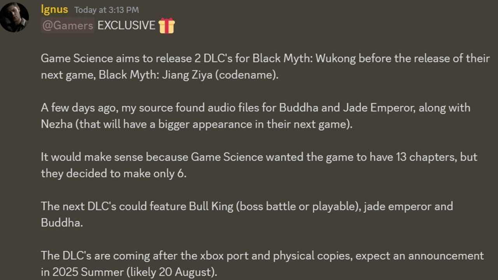

Black Myth Wukong terá sequência ou DLC? O que esperar do futuro do game?
Definitivamente, Black Myth Wukong é um dos maiores hits da indústria de games em 2024. A aventura do Rei Macaco chegou batendo recordes na Steam pouco tempo após a sua estreia — além, claro, de ter conquistado ótimos elogios da crítica e do público. Com tanta moral assim, certamente, muitos estão se perguntando o que vem a seguir.
Apesar de ser um jogo linear e não de mundo aberto, Black Myth Wukong oferece um universo robusto para os jogadores explorarem — com muitos deles beirando as 50 horas de jogatina. Compreensivelmente, esses mesmos aficionados pelo RPG chinês estão pedindo mais: e provavelmente vão ter.
Black Myth Wukong pode ter duas DLCs antes de uma potencial sequência
Segundo informações de Lunatic Ignus em seu canal no Discord, a Game Science estaria planejando dois DLCs para o RPG antes de lançar o próximo game da saga — que está sendo chamado de Black Myth Jiang Ziya nos bastidores.
Vale lembrar que há relatos nas redes de que a Game Science teria registrado direitos autorais de dois nomes adicionais para a saga: Black Myth Jiang Ziya e Black Myth Zhong Kui. Bom, nada foi oficializado até o momento, então trate essas informações com cautela.
Insider Lunatic Ignus sugeriu em seu canal no Discord que Black Myth Wukong pode ter dois DLCs antes do próximo game, que está sendo chamado de Black Myth Jiang Ziya.
Ziya.Fonte: WCCFTech
O foco dessas expansões, segundo Ignus, não foi revelado, mas as fontes do insider descobriram arquivos de áudio com os nomes Buddha, Jade Emperor e Nezha — que supostamente terão um papel ainda maior no próximo jogo/DLC.
De acordo com Ignus, o lançamento das duas expansões fazem total sentido, já que a Game Science planejava 13 capítulos para Black Myth Wukong. Vale lembrar que a versão final possui apenas seis.
Ele também sugere que a revelação dos extras pode acontecer após o lançamento de edições físicas e da versão de Xbox Series X|S. Novamente, isso são apenas rumores.
FAQ oficial sugere que Black Myth Wukong terá DLCs no futuro Enquanto os insiders especulam a chegada de um novo DLC ou até mesmo a sequência de Black Myth Wukong, a própria Game Science sugeriu em seu FAQ oficial que o RPG pode ter "DLCs e compras" no futuro.
Black Myth Wukong emprega um modelo clássico de compra única com um pagamento único
, explica o FAQ oficial. No futuro, podemos lançar DLCs e compras no jogo (não no sentido de pague para ganhar). Além disso, encorajamos todos a tirar uma captura de tela desta declaração como nossa garantia
.